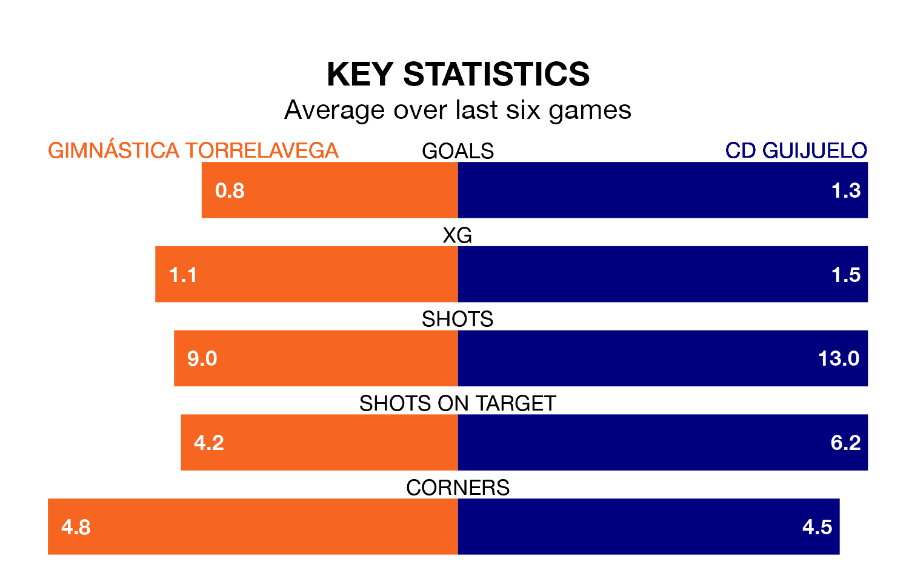

Gimnástica Torrelavega host CD Guijuelo on Sunday at the Estadio El Malecón in the Segunda División RFEF Group 1.
In their last league match, on April 21, Gimnástica Torrelavega beat Cayón 2-1 away.
Guijuelo also won, 2-0 at home against Villalbés, with Adrián Hernández Hernández and Xabier Dominguez Penín on the scoresheet.
With 35 goals in 32 games so far this season, Guijuelo are scoring at below the league average rate with 1.1 goals per game. But they are conceding fewer than average too, letting in 29 goals at a rate of 0.9 per game.
Gimnástica Torrelavega, meanwhile, are average scorers, with 1.2 goals per game. They have conceded 1.5 goals per game.
The visitors are fourth in the table after 32 games, of which they have won 14 and drawn nine, earning 51 points.
The home side are nine places behind Guijuelo in 13th, with 10 wins and seven draws putting them on 37 points.
Gimnástica Torrelavega are in disappointing form in the Segunda División RFEF Group 1, with two wins and four losses from their last six games.
With three wins and two draws over that period, Guijuelo's form is better – they have taken 11 points from 18, compared to Gimnástica Torrelavega's six.
In the last three years, Gimnástica Torrelavega and Guijuelo have played each other on three occasions. They won one each, and they drew once.
Their last meeting was on December 16, when Guijuelo won 2-1 at home.
Updated: 07:59 (UTC), 26/04/24